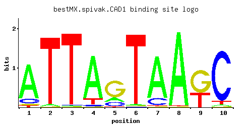

CAD1
YDR423C, YAP2
AP-1-like basic leucine zipper (bZIP) transcriptional activator involved in stress responses, iron metabolism, and pleiotropic drug resistance; controls a set of genes involved in stabilizing proteins; binds consensus sequence TTACTAA
Best-performing DNA-binding model.

View and copy the recommended matrices ↘
A | 0.811 0.026 0.007 0.850 0.159 0.016 0.834 0.986 0.004 0.030 C | 0.116 0.002 0.008 0.027 0.155 0.004 0.147 0.002 0.006 0.901 G | 0.042 0.009 0.005 0.006 0.664 0.006 0.006 0.005 0.607 0.011 T | 0.032 0.963 0.979 0.116 0.022 0.974 0.012 0.007 0.383 0.057
A | 81 2 0 85 15 1 83 98 0 3 C | 11 0 0 2 15 0 14 0 0 90 G | 4 0 0 0 66 0 0 0 60 1 T | 3 96 97 11 2 97 1 0 38 5
A | 0.93 -2.51 -3.82 0.98 -0.70 -3.00 0.96 1.13 -4.38 -2.37 C | -0.44 -4.50 -3.11 -1.90 -0.15 -3.81 -0.20 -4.50 -3.40 1.61 G | -1.46 -3.00 -3.58 -3.40 1.31 -3.40 -3.40 -3.58 1.22 -2.80 T | -2.30 1.10 1.12 -1.01 -2.68 1.11 -3.28 -3.82 0.18 -1.73
Alternative candidate matrices 10
Historical matrix candidates from the original ScerTF database. Expand a source to inspect its original logo, scores, and matrix values.
CAD1_AFoat et. al.P = 1View matrix ↘
CAD1_BFoat et. al.P = 4.38e-05View matrix ↘
CAD1_CFoat et. al.P = 0.0001573View matrix ↘
CAD1_AFordyce et. al.P = 0.3325View matrix ↘
CAD1_BFordyce et. al.P = 0.8523View matrix ↘
CAD1_CFordyce et. al.P = 1View matrix ↘
CAD1Harbison et. al.P = 1.70e-26View matrix ↘
CAD1Macisaac et. alP = 3.62e-26View matrix ↘
CAD1Morozov et. al.P = 2.72e-26View matrix ↘
CAD1Pachkov et alP = 9.20e-25View matrix ↘
Gene-level annotations and interactions.
Genes bound in ChIP-chip experiments 68 genes
YAL058W, YBL008W, YBL034C, YBR046C, YBR047W, YBR057C, YBR280C, YCR037C, YDL104C, YDL239C, YDR036C, YDR037W, YDR132C, YDR135C, YDR137W, YDR543C, YEL044W, YEL045C, YEL046C, YER141W, YGL115W, YGL157W, YGR167W, YGR233C, YGR234W, YHL039W, YHL040C, YHR008C, YHR048W, YHR053C, YHR055C, YHR077C, YHR078W, YHR091C, YHR133C, YHR134W, YJL100W, YJL101C, YJR044C, YKL039W, YKL040C, YKL086W, YKL087C, YKL101W, YKL102C, YKL103C, YKL154W, YKL155C, YKR052C, YKR071C, YLL002W, YLL060C, YLL065W, YLR108C, YLR109W, YLR456W, YML116W, YML133C, YMR038C, YNL134C, YNL337W, YOL077W-A, YOL078W, YOL080C, YOL119C, YOR173W, YPL283C, YPR048W
Genes affected by TF deletion 105 genes
YJR048W, YMR192W, YOR377W, YBL087C, YOR192C-B, YOR258W, YEL017C-A, YHR145C, YLR089C, YPL016W, YOL104C, YLR152C, YLR184W, YMR258C, YOR133W, YOR165W, YPL084W, YGR064W, YMR102C, YCL020W, YDR281C, YGR183C, YML022W, YBR012C, YCR050C, YCL065W, YDR410C, YHR001W-A, YAR010C, YHR152W, YLR410W-B, YOR043W, YOR075W, YPL060W, YCR093W, YCL058C, YJR027W, YNR066C, YJR148W, YGR161C, YGR161W-B, YLR035C-A, YLR099C, YHR214C-B, YIL060W, YJL191W, YMR291W, YPL156C, YDL040C, YLR345W, YMR108W, YMR110C, YOR356W, YPR055W, YDL231C, YHR214C-C, YCR024C-A, YER129W, YGR294W, YIL100W, YBR235W, YGR164W, YLR110C, YBL101W-A, YDR417C, YGL188C, YOL059W, YEL060C, YKL120W, YKL030W, YPR002W, YDR298C, YKL221W, YOL119C, YPR035W, YHR136C, YJL143W, YBL107W-A, YCR031C, YFL002W-B, YER138W-A, YIL133C, YIL103W, YLR300W, YPL228W, YDR210W-A, YDR210W-C, YDR213W, YHR135C, YJL076W, YMR211W, YPL075W, YPR158W-B, YDL023C, YOL103W-A, YOR343C-B, YIL011W, YKL192C, YDL022W, YLR395C, YMR123W, YPR043W, YGR209C, YIL069C, YML081C-A
Genes supported by both experiments 1 genes
YOL119C